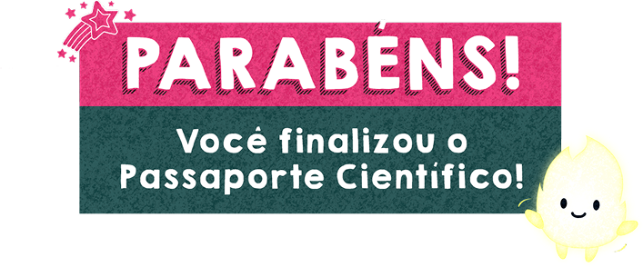

Parabéns por concluir a Trilha da Semana 7!
Conclua as trilhas de todas as outras semanas e retorne a essa página para ter acesso ao seu portfólio completo!

Chegamos ao fim da nossa viagem pelo Meu Passaporte Científico, uma jornada que nos levou a explorar diferentes espaços, conceitos e práticas do ensino de Ciências da Natureza. Ao longo das sete trilhas, você teve a oportunidade de refletir sobre como o conhecimento científico se constrói e, sobretudo, como pode ser vivenciado, interpretado e ressignificado na educação dos anos iniciais.
Mais do que visitas ou estudos dirigidos, cada etapa desta experiência buscou abrir janelas para novas formas de ensinar e aprender Ciências: observando, questionando, experimentando e conectando teoria e prática de modo sensível e contextualizado. Museus, planetários, jardins, espaços culturais e ambientes virtuais deixaram de ser apenas locais de apreciação — transformaram-se em laboratórios vivos de aprendizagem, capazes de despertar curiosidade, ampliar repertórios e fortalecer a postura investigativa que desejamos cultivar nas crianças.
Agora, ao carimbar seu passaporte nesta última parada, fica um convite que marca toda a proposta:
- Continue explorando o mundo ao seu redor com olhar investigativo.
- Transforme experiências em possibilidades pedagógicas reais.
- Inspire seus futuros alunos a também se tornarem viajantes curiosos no universo da ciência.
O fim desta trilha não é um ponto final, mas o início de muitas outras jornadas. Que cada descoberta feita aqui se converta em práticas criativas, inclusivas e significativas na sala de aula, contribuindo para uma educação que reconhece a ciência como linguagem para compreender e transformar a realidade. Seu passaporte está agora cheio de registros, reflexões e aprendizados. E, como toda boa viagem, ele não termina: ele continua nos caminhos que você ainda vai trilhar como educador(a).
Cada carimbo é uma luz que você acendeu no caminho. Que sua curiosidade nunca se apague — e que você siga iluminando novas aventuras científicas com seus futuros alunos. Até a próxima jornada!